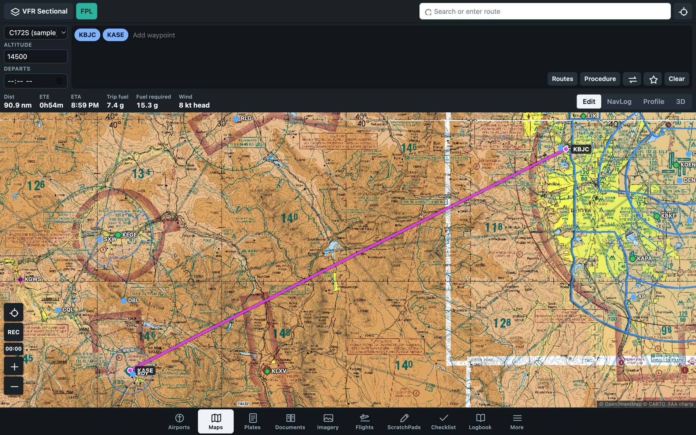
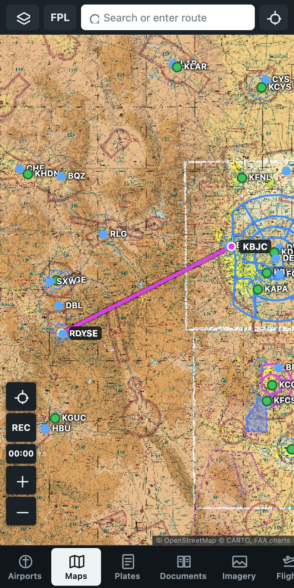
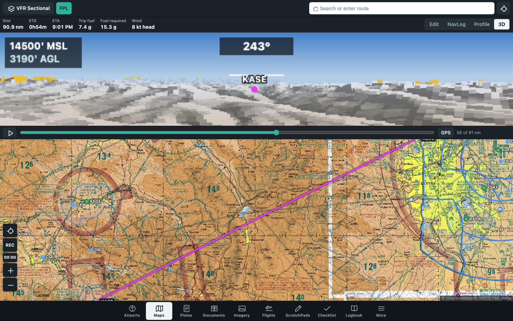

Get Kestrel EFB
Free on every device. Your data stays the same on all of them when you sign in.
Free on every device. Your data stays the same on all of them when you sign in.

Nothing to install. Works in Safari, Chrome, Edge and Firefox on any computer, tablet or phone.
Apple silicon or Intel. macOS 12 or later.
64-bit Windows 10 or 11.
Add it to your Home Screen from Safari.
Install it from Chrome.


